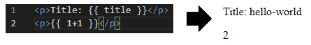
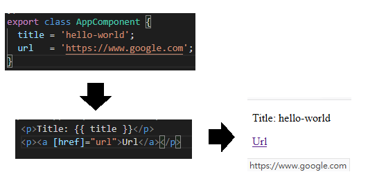
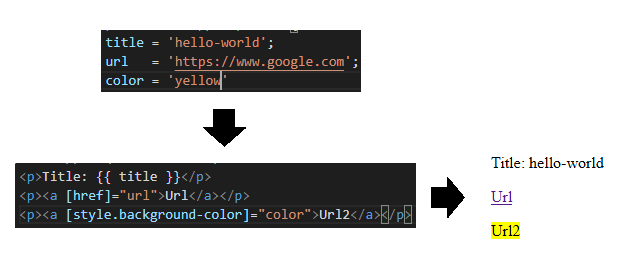
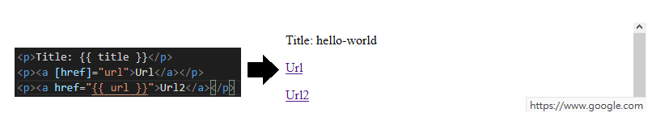
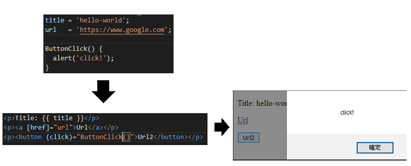
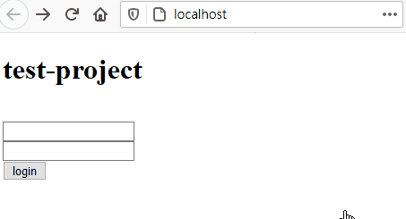

Angular學習筆記4 - Component與樣版
上次有提到，Component 的變數可以在樣板中被使用。
那實際上樣板是怎麼使用 Component 的變數呢？
Component 跟樣板的關係又是什麼？
本章將會進一步講解 Component 與樣板之間的關係
並透過 Angular 提供的綁定功能，來寫一個簡單的登入畫面
何謂 Component ？
在上一篇文章裡，只有提到 Component 裝飾器的部份，但並沒有特別說明 Component 是什麼
那 Component 到底是什麼
就我所理解，Component 是頁面的其中一種元件
仔細回想一下裝飾器內容，裡面不是有個 selector 參數嗎？
這個 selector 會選擇一個獨立的標籤名稱，並把樣板內容帶入，所以當你要使用這個 Component 時，你只要帶入這個 Component 選擇的標籤就可以將那個 Component 的內容帶入了
以 AppComponent 的 app-root 為例子，當你在 index.html 中使用了 <app-root></app-root>，這便表示了你在頁面的那個位置使用了 AppComponent ，你也不需要知道這個標籤的細節，就可以使用了
Component 與樣板的關係
再回想一次裝飾器的內容，裡面有一個 template (或 templateUrl) 參數
這個參數的內容，或指向的檔案，即為樣板
所謂的樣板，就是一個 HTML 塊
Component 的畫面要如何呈現，都取決於樣板
Component 與樣板的溝通
Component 跟樣板可以透過幾種方式來進行溝通：
- 文字插值 (Text interpolation)
- 屬性綁定 (Property binding)
- 事件綁定 (Event binding)
- 雙向榜定 (Two-way binding)
文字插值 (Text Interpolation)
使用方式：{{ expression }}
最常使用的形式，可以放在任何地方。
這個區塊的內容會被替換成裡面的程式所輸出的結果
除了可以使用 Component 的變數以外，亦可以進行一些運算，如：{{ 1+1 }}

除了單純輸出以外，還另外有一個 pipe 的功能可用，之後會說到
屬性綁定 (Property Binding)
使用方式：[property]
這裡的綁定關係是從將元素上的屬性與 Component 綁在一起
此時屬性的數值是程式的一部分，而不是純文字

數值亦可以輸入運算式，像是：[href]="1+1"
除了對一般的屬性進行綁定，也可以對元素樣式進行綁定

使用文字插值一樣可以進行屬性綁定，兩種寫法是一樣的

被綁定的是 property，而不是 attribute
官方文件有一段在敘述綁定屬性的名稱問題：
https://angular.io/guide/property-binding#colspan-and-colspan
實際上文件都是寫 property，在那段也有說到，綁定的並不是 attribute
如果要綁定 attribute，請使用 attr，例如：attr.href
事件綁定 (Event Binding)
使用方式：(event)
可以將 DOM 事件綁定到 Component 的函式上
也可以直接執行一段程式

使用 $event 取得事件資訊
$event 是一個儲存事件相關資訊的變數
例如說 $event.target 可以取得該事件作用的對象
在綁定事件時，可以將 $event 或是 $event.target 帶入函式中使用
雙向綁定 (Two-way binding)
使用方式：[(property)]
一種比較特殊的綁定方式，是屬性綁定和事件綁定的合體
我目前還沒有用過雙向綁定，詳細的用法可以看官方文件：Angular - Two-way binding
用 Component 實做一個登入畫面
使用剛剛介紹的幾種溝通方式，做一個簡單的登入畫面
當使用者輸入帳號：bob，密碼：bubble 時，會登入成功
登入成功時，下面會顯示一行歡迎使用者的綠字
登入失敗時，下面會顯示一行登入失敗的紅字
import { Component } from '@angular/core'; |
<h1> {{ title }} </h1><br> |
在樣板檔裡可以發現 <input> 上有標記 #username 跟 #password
這是 angular 樣板裡的一種特殊語法，它表示目前標記所在的元素，是一個變數
因此才能夠在下面的 onLogin 中直接取得數值，是很好用的東西
打完程式之後，就可以使用 ng serve 來看看畫面：

結語
一開始寫這邊的時候，一直在想要怎麼接續上一次的變數
寫著寫著，發覺開頭怪怪的，於是又修了一下
寫到雙向綁定後，才發現之前根本沒有用過雙向綁定 Orz
後來跑去看了下官方文件，嗯…，要先塞幾個東西進來才能繼續講下去，所以就沒有特別說明了 (果斷放棄)
到目前為止，我都還沒講到 Angular 比較基本的樣板寫法，像是 ngIf、ngFor 之類的
前面單純講概念就花掉太多篇幅了…
後面會慢慢把這些東西補完，然後接著繼續講 Module、Routing 還有 Service 的部份
這篇被擱置了一段時間才放出來，主要是我在思考這篇是不是出來的太早
本身初學 Angular 並沒有多久，其實還沒有一定的份量可以寫出豐富的內容
太急著寫也表示自己還沒有好好的消化，就把文寫出來，可能會造成很多小錯誤
因此這個學習筆記之後會慢一點出，慢慢消化跟查閱文件後再釋出
參考
更新
- 2021/02/23
- **何謂 Component ？**條目
- 敘述修正：
<app-root></app_root>=><app-root></app-root>
- 敘述修正：
- **何謂 Component ？**條目